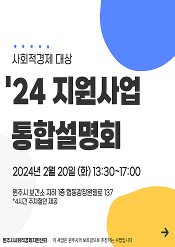
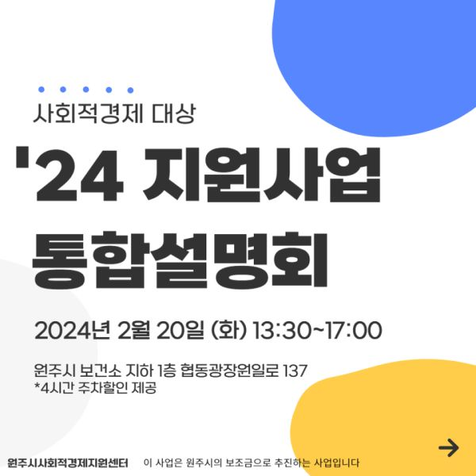
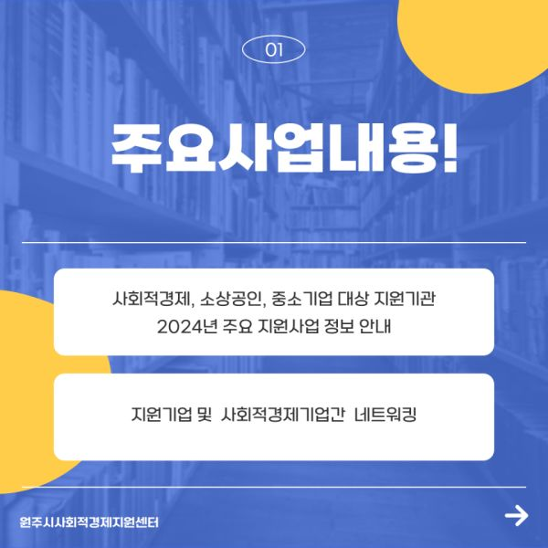
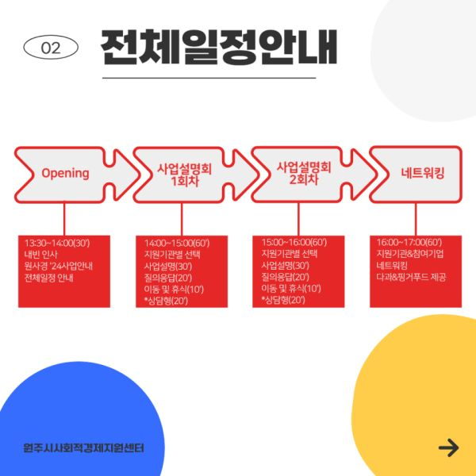
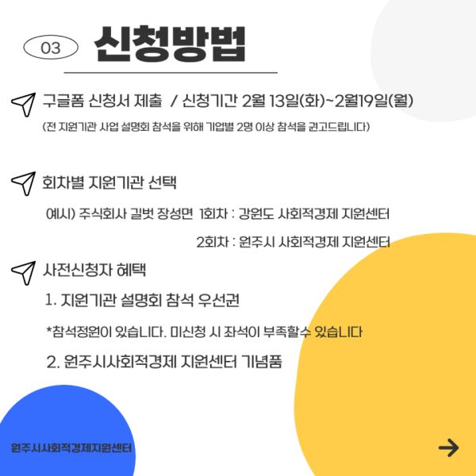

안녕하세요.
원주시사회적경제지원센터입니다.
요즘, 사회적경제 지원정책 환경 변화로 인해 많은 기업분들께서 고민이 많으시리라 생각됩니다.
또한, 공모사업은 많은데 어디를 어떻게 해야할지 잘 모르시는 분들을 위해
저희 사회적경제 지원정책 뿐만 아니라 소상공인, 중소기업 지원정책까지 한번에 만나실 수 있는
자리를 야심차게 준비했습니다. 기업분들의 많은 관심과 참여 부탁드립니다.
< 2024년 사회적경제(소상공인, 중소기업) 대상 지원사업 통합설명회 안내>
○ 일 시 : 2024. 2. 20일(화) 13:30~17:00
○ 모집 기간 : 2024. 2. 13(화) ~ 2. 19(월)
24 지원사업통합설명회 신청링크 https://forms.gle/BrKTKYrxQ57ZXVCCA
○ 설명회 지원기관
- 참여확정지원기관 (5개소)
소상공인시장진흥공단, (사)강원도사회적경제지원센터, (재)강원창조경제혁신센터, 원주푸드신활력플러스추진단, 사회적기업진흥원 경기통합센터
- 참여요청지원기관(2개소)
강원도특별자치도 경제진흥원, 중소벤처기업진흥공단
○ 문 의 : 033-735-1966 / 장성면 팀장